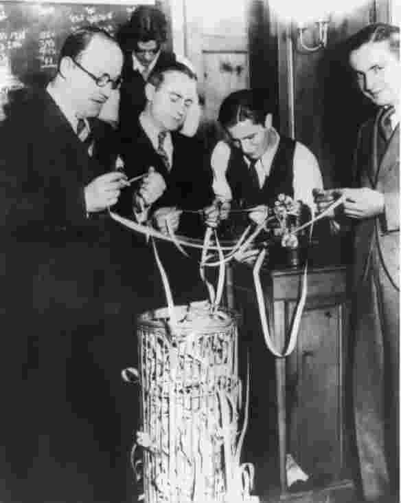

生活在经济危机中的人们或许觉得他们的世界正在崩塌。他们或许以为整个资本主义体系即将终结。但是，资本主义的危机并不是偶然事件，而是资本主义社会运作的一个正常部分。尽管我们如今所熟悉的危机机制早在几个世纪前就已出现，但到19世纪经济危机才成为了经济生活的常规特征。本章从17世纪荷兰的“郁金香狂热”开始谈起，这个案例所展示的基本运作机制与近期出现的电子商务和信息科技泡沫完全一致。
郁金香于16世纪从土耳其输入荷兰，凭借其独特的异域风情和稀缺的品种，在17世纪成为人们钟爱的花卉。在荷兰肥沃的冲积土地上，郁金香种植面积不断扩大，但是稀缺的供应和大量需求依然导致价格不断攀升。高利润率吸引了许多人进行交易，所需投资很少，挣钱很容易。
对郁金香球茎的大量需求迅速改变了球茎交易。起初，球茎被大批出售，有时甚至是整片苗圃一起出售，但随着需求的增长，交易单位不断缩小，直到最后仅以单个球茎出售，尤其是那些最为名贵的变种。随后，出现了新的市场，专门交易球茎上的生长物，因为从中可以长出未来的新球茎。最终，在17世纪30年代，郁金香交易产生了郁金香期货市场，并直接导致了1636年至1637年的“郁金香狂热”。
这一切是怎么发生的？起初，交易季节很短暂，仅仅在开花和摘取球茎后持续几个月。为迎合增长的需求，交易者开始买卖依然种在土壤里的郁金香。现在他们实际上就是买卖球茎期货。期票上规定了所买郁金香的细节以及摘取的时间，而土地里则将做上标记以辨识买主。随后就是从交易球茎发展到交易期票的小小一步，因为迅速上涨的球茎价格使期票价值也开始飙升。
郁金香期货交易变成了一场疯狂的投机泡沫，不是对球茎的需求，而是对“纸面的”期货的需求推动了价格上涨。由于签订期货合约时只需支付定金，因此一小笔钱足以发挥巨大的作用，只要在全额支付时间截止前能找到下家接手合约，就能赚取利润。随着合同日期的临近，交易变得越发疯狂，期票流通速度进一步加快。价格最终攀升到无人问津的地步，随即突然暴跌。许多很普通的郁金香其实并没有实际需求，它们只是在泡沫最鼎盛的时候被卷入了投机交易。既然没人真正想要这些球茎，在未来购买它们的权利最终变得毫无价值，因此，市场价格一路暴跌。
期货交易是泡沫通胀的核心机制，在当时期货交易已经是商业资本主义的成熟做法，但有趣的是，球茎期货市场上的购买主力并非商人。一些商人确实参与了购买，但是真正的大商人正忙于从自己的垄断经营中获取风险较小的利润，他们并没有涉足郁金香交易。泡沫膨胀由普通民众推动，包括纺织工、砖瓦工、木匠、修鞋匠等。他们投入全部积蓄，到处借钱，抵押资产或者以实物抵付款项。西蒙·沙马举了一个例子，为购入一个稀有的球茎，有人付出的代价是“两车小麦加上四车黑麦、四头肥牛、八头猪、十二只羊、两桶葡萄酒、四吨黄油、一千磅奶酪、一张床、若干件衣服和一只银质的杯子”。
球茎及期票交易并没有在阿姆斯特丹股票市场进行，尽管那里有着大量其他的投机活动，而是在小酒馆里进行，交易者“群体”在那里见面并喝酒。这些群体发展出他们特有的秘密程序、交易仪式及庆典，相当于穷人版的股票交易流程。当时的投机资本主义，就像现在一样，不仅有老练的金融家进行投资，而且也是一项大众参与的经济活动。
尽管对于投资郁金香的人来说，泡沫破灭的后果很严重，但总体上它对于经济并没有产生重大冲击。当时的经济活动还没有高度一体化，因此经济危机不会从一个领域扩散到整个经济体。是资本主义生产的发展产生了使危机扩散到整个经济体的必要联系。而且，资本主义生产事实上产生了新的危机机制，马克思曾对此作了分析。
马克思认为，因为生产与消费分离开来，所以资本主义天生具有产生危机的倾向。在资本主义出现之前的社会形态中，生产与消费紧密联系在一起，因为大多数生产都或多或少被用于直接消费。在资本主义制度下，商品生产是为了在市场上进行销售，生产与消费之间的关系变得更为疏远。人们生产商品是寄望它们能在市场上卖出去，但市场可能无法吸收它们。马克思将资本主义描述为无序状态，因为消费者需求不再直接管控生产。
事实上，资本主义生产天生具有过度生产的趋势。生产者之间的竞争产生了要求生产扩张的压力，因为更高的产量能降低成本，降低价格，扩大市场份额。当生产的商品数量超过需求量时，就会出现过度生产的危机，价格将会下跌，最终降到不足以赢利的水平。这不仅伤害了该产业，而且具有扩散危机的连锁反应。投资将减少，并影响机器制造业。工人将遭到裁员，或者被削减工资，这将进一步减少消费需求。通过这些方式，过度生产产生了恶性循环，导致工厂关闭和破产，失业率水平居高不下。大规模的失业又会导致社会危机，因为在资本主义经济体系内，人们以一种全新的方式依赖雇佣劳动来获得生存。自从19世纪下半叶以来，这样的危机几乎每十年就出现一次。
尽管失业造成了巨大的苦难，一些人就此破产，但这些危机并没有摧毁资本主义制度。事实上，马克思认为，危机使资本主义得以继续前进，因为危机消除了过度生产所带来的负担，淘汰了效率最低的生产者，一旦工厂倒闭和破产使生产降到接近需求的水平，就能重新开始良性循环。同样地，较低的工资增加了利润率，更低的价格刺激了需求。更低的利率使贷款投资的成本更低。生产可以重新扩张，就业将增加，更多的人将有钱购买商品。
因此，资本主义将通过扩张走出危机，但是，马克思在《共产党宣言》中提出，这种扩张只会导致“范围更广、破坏性更大的（新）危机”。这并不意味着，如他的一些追随者所认为的那样，马克思相信资本主义将以经济大崩盘的方式灭亡。只有当资本主义被它所剥削的工人阶级推翻时，它才会灭亡。资本主义发展过程中的某些趋势将为最终的颠覆提供便利。技术的进步和所有权的集中将扩大生产规模，更多数量的工人将被集中起来，变得更容易组织。在这一切过程中，危机当然将起到作用，当工人们经历危机时，他们将变得更为激进。此外，贫富差距的扩大也将造成工人的激进态度。财富日益集中到少数富裕的资本家手中，他们享受着资本带来的利润，而大量贫困的工人则时常遭受失业之苦。
所有权确实变得更为集中，生产单位的规模变得更大，工人变得更有组织性。由于工人们对工作的经济依赖，以及试图推翻资本主义体系的革命运动所遭受的镇压，他们被迫接受了资本主义制度。他们通过工会组织被吸纳进入资本主义社会的政治结构中，并受到资本主义生产所提供的商品和服务的诱惑。无论如何，没有哪次危机的规模大到足以威胁资本主义经济体系，直到20世纪30年代大萧条的出现。
从19世纪中期开始到一战前，资本主义社会经历了一段稳定的、危机很少的发展时期，到战后的20世纪20年代，显然发展还在继续。但是，第一次世界大战的结束留给世界的是一个脆弱的经济体系。伦敦原本发挥着稳定经济的金融主导作用，现在这已成为历史，国际经济关系在20世纪20年代陷入了无序和不稳定状态。而且，大战及其后续影响使许多国家，尤其是德国，背负了巨额债务。与此同时，这些国家的经济遭到削弱，无力偿还债务。这是20世纪30年代大萧条的历史背景，这次萧条影响如此深远，范围如此广泛，以至于埃里克·霍布斯鲍姆认为它“几乎相当于资本主义世界经济的崩溃”。
20世纪20年代，有许多迹象表明，世界经济并非一切正常，但是直到1929年纽约华尔街股市大崩盘才引发了大萧条。1929年10月，纽约股价暴跌，随后一路直降，到1932年6月才触底，与1929年9月的巅峰值相比，纽约股市贬值超过80%。

图131929年股市崩盘时，交易者查看电传打字机纸带上的股市行情
累积机制令经济陷入萧条。在整个工业世界，生产普遍出现衰退，这导致失业人数迅速增长，后者又减少了需求并导致生产进一步萎缩。1929年至1931年，美国的工业生产减少了1/3，在衰退达到谷底时，超过1/4的劳动力处于失业状态。失业的工人无法支付住房贷款的利息，这威胁到当地银行的偿付能力。工人们无力继续购买消费品，尤其是汽车，美国汽车产量减半，造成更多人失业。当时国家提供的低福利不仅使失业所产生的影响相比如今的工业社会更为严重，而且也意味着大规模失业可能让相当多的人丧失购买力。
这不仅是工业社会的一场危机，因为农业也遭遇了严重萧条。随着消费者需求下降和货物囤积，农产品的价格开始下跌，茶叶和小麦价格暴跌2/3，丝绸价格暴跌3/4。农民的反应是无助地增加生产，以期维持他们的收入，但这导致了价格进一步下跌。20世纪30年代留给我们的主要印象就是欧洲和美国的失业工人在施舍处排队，或者饿着肚子游行。阿根廷、巴西、古巴，以及澳大利亚和新西兰等国家的经济一直依赖于向工业国家出口食物和原材料，在大萧条中它们也同样遭到了沉重打击。
图1420世纪30年代大萧条期间的美国，劳动力被公开拍卖给出价最高者
20世纪30年代显示了资本主义世界经济在危机面前的脆 弱 。问题并不在于危机的发生，因为正如我们所见，危机是资本主义正常机制的一部分，问题在于随着累积机制的扩散和危机的加剧，世界范围内资本主义经济体系纷纷崩溃。资本主义经济的脆弱性有三个根源。
首先，在上一个世纪里，生产能力急剧增长。这意味着，要想吸收所有产品，需求量也要增长到同等水平。这个条件不仅适用于制造业，也适用于食物及其他主要产品的生产。消费不足的原因不仅仅是过度生产，也包括由于工人收入降低所造成的消费不足。不管出于何种原因，生产规模的扩大以及就业人数的增加意味着一旦消费无法与生产同步，那么随着工人们（他们同时也是消费者）失去工作，经济发展将呈螺旋式下降。
其次，国际劳动分工造成了世界一体化。工业社会生产制造品，而世界其他地区则集中生产食物与原材料。一旦工业社会的需求下降，向它们出口牛肉、咖啡、糖等初级产品的生产国就会发现自己的销售、价格、收入都在下降。当它们的收入下降时，工业产品的国外市场必然出现衰退。一些历史学家认为，大萧条开始于初级产品生产国，随后扩散到工业社会；另一些人则提出了相反的观点。但无论如何，发生在某一类国家的危机不可避免地被扩散到了另一类国家，随后在两者间不断回荡。全球经济一体化是放大萧条的另一种机制。
再次，国际贸易与国家保护之间存在矛盾。作为第一个工业国家，英国一直推行自由贸易政策，这为它的产品获得了最大化的市场。当其他国家随后开始工业化的时候，它们不可避免地更倾向于保护主义政策，因为它们刚起步的工业需要保护，以求站稳脚跟。日渐激烈的国际竞争带来了更多要求国家保护的呼声。不过，直到一战之前，英国的经济主导地位和全球性经济增长一直维持着自由贸易。但到了一战之后，部分由于战争的影响，英国不再主宰国际经济，而国际经济的稳定发展也已不复存在。
当国内生产面临危机时，保护国内经济以应对国际竞争，这一诱惑令人难以抗拒。只要一个国家采取此类行动，其他国家必然迅速跟进。例如，美国于1930年采取大范围关税措施保护经济，引发了其他国家的报复。而且，19世纪几个相互竞争的帝国分割了世界版图，从而造成了工业社会的错觉，以为它们能够经济自足，并且拥有现成的自我保护结构。此类错误的后果是，世界贸易不断衰落，使经济萧条进一步恶化。
大萧条催生了一系列新的政策，其目的在于防范类似情况再度出现。政府适应了应对萧条，通常的做法是削减开支或增加税收，从而在经济衰退导致税收减少时能够平衡收支。约翰·梅纳德·凯恩斯认为，政府可以通过借贷或降低税收，在经济体中创造需求，从而缓解萧条趋势。这些凯恩斯主义的政策在20世纪30年代后期开始影响一部分国家，不过帮助全球经济摆脱萧条的，主要还是二战所造成的巨额政府开支。
二战后的25年里，资本主义的危机倾向似乎得到了控制。战后对于再度出现高失业率的担忧被证明毫无道理。各国政府以为现在它们懂得了如何使用凯恩斯主义政策来避免危机失控，尽管这一时期的经济稳定增长很可能与它们的经济技能毫无关系，因为政府频繁做出不合时宜的干预，从而可能加强也可能减弱了经济循环。是其他潜在的因素刺激了繁荣。
战争期间的大幅开支事实上并未停止，因为美国现在卷入了一场新的战争，即它与前苏联的冷战。这不仅带来了美国在海外的军事开支，而且有意识地造就了日本和欧洲经济的复苏，因为这些地区是冷战的前沿。它还导致了太空竞赛。在前苏联将宇航员加加林送入太空后，作为回应，美国将大量资金投入到太空计划。这是一种扩张性的活力，完全不同于两次大战期间对外隔绝的保护主义策略。世界上最大的经济体正在推动经济增长，使之跨越保护主义的界限。
技术进步极大地促进了生产，但由于消费者需求也在持续上升，过度生产的危机得以避免。更高的生产率意味着商品价格下降，价格一直处于工人们能够购买的水平。例如，整个社会都能拥有汽车。更高的生产率也允许工资增长，而全员就业使得劳动者得到了最大的谈判权力。
但是，这些增长中的相当部分是以其他地区为代价换来的。工业社会的富裕依赖世界其他地区所提供的低价初级产品。石油的低价尤其关键，因为石油不仅是一种油料，而且也是制造一大批合成物质的基础。这些产品被用来替代第三世界的“天然”产品，从而进一步压低了价格。因此，新的合成纺织品降低了对棉花的需求。制造品与初级农产品价格之间的关系变得不利于初级产品生产者，他们发现到1970年，购买制造品的花费比1951年购买同类产品时多出1/3。
到了20世纪70年代，这一切都变了，因为随着国际经济增长停滞不前，推动之前20年经济增长的良性循环变成了恶性循环。最明显的例子是许多初级产品价格的上升，特别是石油，这持续增加了工业成本并提高了销售价格，从而影响了利润，减少了实际工资，并由此降低了购买力。工资增长压缩了利润，一方面因为工会组织持续发展，各个工会间相互竞争，另一方面因为工人们对价格和税收增长作出反应，要求增加工资以维持生活水准。另一个问题是，美国的军事开支和进口使美元在世界到处流通，使得现存的、基于固定汇率制的国际金融体系无法吸收这些美元。
结果是一场新的危机，就性质而言，它完全不同于30年代的大萧条。在30年代，需求锐减，现在则是需求过多，它迫使价格和工资上涨。而且，固定汇率制解体后，汇率的浮动使得政府放松了对于通胀的货币管制，因为政府现在的压力比以前小，不需要为了维持汇率而保护货币价值。
日渐激烈的国际竞争加剧了危机。德国和日本从战败对于经济的毁灭性打击中恢复过来，将现代化的、高效的工业投入生产。这进一步增加了对于世界资源的压力，也产生了新的过度生产危机。更多需求造成了更高的工资和原材料价格，随后的过度生产又降低了公司为它们的产品制定的价格，使得赢利变得更加困难。
日本旧工业社会各行业的赢利性所受的打击是毁灭性的，因为日本政府和工业十分有效地进行合作，追求以创造新产业和获取市场为目的的长期政策，而日本的生产率相比旧工业社会要高出许多。旧工业社会在应对此次危机时，面临着特定的问题。正如我们在第三章所见到的，它们所发展的管控型资本主义制度，限制或取代了原本可以作出迅速反应、进行资源重组的市场机制。它们不得不等到20世纪80年代政府对经济重新进行市场化之后才能作出有效的反应。
20世纪70年代之后，出现了一个新的世界：发展减缓，不稳定性增加，危机频繁出现。在20世纪的最后25年里，增长率是之前25年的1/2。各国间也有着鲜明差异。一些国家，尤其是澳大利亚、爱尔兰和荷兰在90年代的增长速度比80年代要快了许多，而在更多国家，如德国、意大利、日本、韩国和瑞士，增长率则出现下跌。许多国家在大多数时候处于危机的边缘，但当增长泡沫破灭时，即使一些经济强国也会陷入困境。危机也可以从一个国家轻易传播到另一个国家，比如1997年至1998年的危机开始于东亚的经济强国，但随即扩散到俄罗斯，再到巴西。
这是一个国际竞争加剧的世界。正如我们之前所看到的，国际竞争的加剧是导致20世纪70年代旧工业社会出现低利润率的变化之一。更低的利润率随后导致公司试图在其他地方寻找廉价劳动力来维持利润。随着工业领域内的工作，无论是制造业还是服务业，纷纷扩散到世界的其他地区，国际竞争进一步加剧。前苏联的解体使东欧各国得以向资本主义世界提供它们的廉价劳动力。中国的加入至少带领了将近1/4的世界人口进入世界经济。
生产能力的提高，当然还有技术进步，造就了更高的产量；如果需求也相应增加，这部分产品就能被吸收，但是全球范围内的需求并没有与商品供应同步增长。毕竟，新生产中心出现的原因之一是能够得到廉价劳动力，而低工资所产生的消费者需求并不高。循环后的石油资本通过借贷流入第三世界，这起初刺激了当地的消费，但利率的提高随即让这些国家背负巨额的长期债务，它们的国民收入中相当大的一部分被用来支付利息和还贷。正如我们在第五章中所看到的，国际间不平等在持续增长，这意味着消费越来越集中在美洲、欧洲及远东地区的成熟的工业社会里。
但是，这些社会里的消费需求也不稳定。公司削减工资成本以求至少能与其他新工业化国家的廉价进口商品竞争，于是实际工资和购买力随之下降。私有化将原本受到保护的国有企业员工推向残酷的公开劳动力市场。劳动力从制造业的“好工作”转向薪酬很低的服务业。许多国家失业人数的增加进一步抑制了消费者需求。政府不情愿花钱，宁愿根据后凯恩斯主义经济思想来平衡预算。因此，全球性消费并没有与全球性生产同步，过度生产一直对利润、工资与就业产生了威胁。
对于生产利润率的下降，一种反应是寻找国外的廉价劳动力，另一种反应则是（如阿里吉所说）将资本从生产投资中撤出，转而对股票、货币及衍生产品进行投资。正如我们在第五章中所看到的，大量资金开始跨越国境流动，成为资本主义世界经济中新的不稳定因素，并导致了1997年的东亚金融危机。
寻求在“新兴市场”进行投资的大量资金进入了看似强盛的东亚各国，但在1997年，对于泰国经济稳定性的担忧造成资金纷纷撤出。这随即导致股票和货币价格暴跌，银行陷入困境。类似的情况发生在马来西亚、印度尼西亚、中国香港地区、韩国等地。随着投资者将资金撤出所有被判断为经济疲软的地区，危机并没有就此终止，而是扩散到俄罗斯和巴西。随之而来的衰退不仅在那些受到直接冲击的国家摧毁了经济，而且随着东亚需求的下降，产生了全球性影响，例如，美国对东亚各国的农业和飞机出口就受到了冲击。
这次危机从两个方面表明了资本主义世界新的不稳定性。导致资金从泰国撤出的担忧，部分在于随着不同商品如微晶片、钢铁和汽车的生产商数量倍增，该地区日渐激烈的竞争对利润造成了威胁。危机随即被放大，因为国际金融已经一体化，资金可以在各个经济体之间自由流通。过度生产、日渐激烈的国际竞争和资金的流动性，这三个因素相互作用，导致这场危机持续时间超过了一年，从一个国家扩散到另一个国家。
信息与通讯技术的革命似乎为避开资本主义经济的不稳定性、进入新的增长期提供了机会。这不仅是因为对于“硅谷”的投资以及新创造的软硬件产品，而且也因为这些投资及产品能够提高许多现有产业的生产率。在经济合作与发展组织看来，“信息与通讯技术正在转变经济行为，就像蒸汽机、铁路与电力过去曾做过的那样”。通过文字处理软件及电脑控制的生产、地球同步卫星及移动电话、互联网及网络、电子商务及远程工作，信息与通讯技术毫无疑问已经通过这些方式改变了人们的工作生活。根据经济合作与发展组织的看法，对于信息与通讯技术的投资在20世纪90年代显然促进了经济发展，主要是在美国，但也包括许多其他国家，尤其是澳大利亚和芬兰。
但是，正如电子商务的发展所示，信息与通讯技术并不能帮助我们摆脱资本主义历史上频繁发生的周期性繁荣与衰落。Lastminute网站就是个很好的例子。该网站建立于1998年，其基本构想是，互联网可以牵线帮助企业将手头剩余的旅游行程、餐宴或宾馆房间出售给那些寻求最后时刻的廉价资源的消费者。2000年3月，电子商务处于鼎盛时期，该网站公开发行股票时将价格定为每股3.8英镑，这一价格超过了许多效益很好的知名企业。随后价格很快升至每股超过5英镑，网站的创始人显然加入了电子商务的百万富翁行列。但不到一周，电子商务的泡沫开始衰退，该网站的股价开始下跌，到2001年9月，跌至每股17便士。尽管该网站的商务设想不出所料地遭到了失败，但网站却成功转型为互联网旅行社，利用公开发行股票时所募集的资本购买了其他公司。最终网站幸存下来。在2002—2003年财政年度，该公司有望首次赢利。
Lastminute网站幸存下来了，从这个意义上讲，这个例子并非典型；但在其他方面，它是电子商务短暂繁荣的典型案例。它的初始资金来自风险投资，起初它竭力募集资金，以求在行业中生存，但在媒体大量报道之后，多家银行开始争抢公开发行该公司股票的资格。当股票（由摩根斯坦利公司）正式公开发行时，该网站募集的资金超过原计划47倍，即使当年该公司预计将损失2，000万英镑。它的股价并不是基于预期利润，而是基于它在股市繁荣期间可能通过股价上升所获取的收益。对于该网站业务及股票的疯狂哄抢，源自某种心理恐慌，人们生怕自己错过发财的机会。另一个原因则是受媒体引导所产生的对于新科技的乐观态度。就像所有的泡沫一样，一部分投资者最终判断股价已到达最高点，开始抛售股票兑现。人们再度提出对该网站赢利率的正常质疑，在可预见的将来都无法赢利这一事实意味着股价将暴跌至零点。
电信行业也经历了一次类似的飙升，不过并没有产生灾难性的下跌。在英国，自由化清除了对于公共事业部门的限制，英国电信开始大肆收购，企图将公司转型为全球性机构。英国电信在其他国家购买公司，试图与主要的美国公司合并，并且竞争移动电话经营许可证。竞争的结果对于所有参与者来说都很糟糕，因为政府将这些许可证公开拍卖，价高者得。英国电信在英国募集了225亿英镑资金，在德国募集了310亿英镑，但是那些为购买许可证提供资金的投资者只能猜测自己可能从中获利的金额。拍卖的最终结果造成电信公司背负了巨额债务。英国电信的债务最高，达到280亿英镑，为了将债务减少到可接受的水平，它不得不以亏损价售出它在海外买入的公司以及它的移动电话业务。
图15在2000年3月公司股票公开发行之前，Lastminute网站的创始人，玛莎·简·福克斯与布伦特·霍伯曼，露出了心满意足的神情
英国电信的主要竞争者之一是世通公司，它是美国的第二大长途电话公司，同时也是美国最大的互联网运营商。世通公司在巅峰期时价值1，800亿美元，雇用了8万名员工。但2002年7月，该公司在被揭露曾虚报90亿美元的利润之后，不得不申请破产。由于世通公司的问题紧随安然公司的丑闻被曝光，所以媒体重点关注的是公司的财务假账问题，但这些假账掩盖了其他问题。世通公司起初只是密西西比州的一家小型电话公司，在15年的时间里并购了60家公司，直到2000年它的扩张被欧洲及美国的监管机构阻止。当时这些监管机构担心，世通公司正在计划的一项兼并（与美国移动运营商斯普林特公司）将使得世通公司在全球范围内完全控制互联网流量。事实上，世通公司购买的宽带量已经超过了它本身现有的合理需求，而它也在长途电话市场和移动电话领域遭遇到行业新入者的竞争。过度扩张，竞争日渐激烈，生产能力过剩，负债，收益不足，无法赢利——世通公司的故事与其他企业如出一辙。
信息与通讯技术革命在一些国家激励了经济的飞速增长，并至少给生活在其中的一部分人带去了许多好处，但它并没有解决资本主义世界经济的问题。与之前由技术进步所带来的产业转型一样，信息与通讯技术部门也经历了扩张、过度生产、竞争加剧、收缩的循环发展过程。信息与通讯技术也对资本主义的不稳定性造成了新的影响，它使得更多数额的资金在全球范围内得以更快地流动。
一些经济评论家担心，现在世界经济正进入价格回落的通货紧缩阶段。如果价格下跌，并且商品价格一直下降，这将造成人们暂缓开支，因为在将来商品将变得更加便宜。它同样也会造成企业暂缓购入新的机械。如果消费者和企业开支减少，过度生产的慢性问题将会恶化，造成利润下降，投资减少，失业增加。民众的消费力会减弱，或者不愿意消费，因为越来越缺乏保障。这些恶性循环可能导致经济活动的累积性衰退。
日本已经出现了此类螺旋式经济紧缩现象。数十年的增长之后，飙升的价格造成了经济泡沫，并在20世纪90年代初宣告破灭。从那时起，国内需求一直在下降，价格下跌，失业增加。随着人们对未来变得越发担忧，他们更多地储蓄，更少地消费，而下跌的价格又促使消费者暂缓购买。政府试图通过降低利率或增加公共开支以刺激需求，但到目前为止并不成功。
起初，日本看起来只是个特例，因为过去日本人将收入中很大一部分用于储蓄，而福利国家制度的相对欠缺加剧了日本人为防范未然而对储蓄所产生的依赖。这里显然存在着恶性循环，因为更少的开支造成了更多的失业，从而产生更多不安全感，进而导致人们更多地储蓄，循环进一步恶化。
然而，尽管德国有着完善的国家福利体系，它近来也开始走上了紧缩的道路。有人认为，由于德国要负担重新统一的成本，或者由于德国劳动力市场的不灵活性，它也是一个特例。不过，如果这两个规模庞大、相去甚远的经济体都陷入了通货紧缩的循环，那么这很可能是一个更为普遍的问题。
在这种情况下，为什么在英国没有出现这样的紧缩循环？消费者开支已经明显“违反地心引力”，在不断地增加。服务业的价格也在不断上涨，因此服务业的支出对于在劳动密集型的服务业中维持就业率尤为重要。信贷的扩张对于消费的不断增长起到关键作用。高度发达的、具有强大竞争力的英国金融服务业找到了新的发放贷款的办法，最近的一种办法是以房产的新增值为抵押获得贷款。过度生产的问题暂时被贷款刺激下的过度消费解决了。
但是，债务并不能无限扩张。如果民众的处境发生变化，借贷意愿可能突然改变。在英国，人们的处境事实上正在发生变化，税收更高，大学学费更高，获取养老金的希望更为渺茫。不断增加的债务只能短期维持需求，当民众削减开支时，依然存在突然的、大规模收缩的风险，因为他们无力再借贷，并且要偿还高额的款项。
信息与通讯技术以及相关的股市泡沫使这些问题变得更加糟糕。随着泡沫膨胀，新产品、金融服务业的高收入和个人资本的不断增长所带来的乐观态度刺激了消费。随即，泡沫的破灭导致通信产业和金融服务业的就业及收入出现衰退。它还导致许多人损失了很大一部分储蓄，并且预期得到的养老金更少，因为养老基金也遭到了巨额损失。如果房价泡沫也破灭，相似的情况也将发生。
所有这一切都有可能使民众的首选从开支转为储蓄。而且，政府之前所制订的支出计划正是基于经济增长所带来的不断增加的税收，如今政府不得不削减支出，或增加税率，或更多借钱，所有这些举措都将削减消费者需求。消费的下降将进一步扩大生产与消费之间的差距，并使得过度生产且消费不足的问题变得越来越严重。
资本主义世界经济没能进入持续稳定发展的新时期，安然公司和世通公司的丑闻、各种金融泡沫的破灭，加上未来可能陷入通货紧缩的预测，这一切使得一些人认为，资本主义体系处于崩溃的危险之中，可能陷入某种终极危机。
围绕安然公司和世通公司的丑闻显得尤为严重，因为它们威胁到了资本主义行为规范的根基。如果手头握有股票期权的管理者谎报利润，公司的利润数据就变得不再可信，而知名会计师事务所参与合谋则意味着原本用来避免此类职权滥用的审计机制并没有起到作用。许多华尔街银行也被曝光，它们没能做到向客户提供客观的投资建议，而是将客户引向了与银行有着利益牵涉的公司。所有这一切都意味着，投资者所依赖的信息及建议不值得信任。对于资本主义市场运作的信心已经发生动摇，而市场运作又是整个资本主义制度的核心。
但是，丑闻已经成为资本主义一再出现的特征。真正的资本家一心想着不受道德规范约束以积聚金钱，这一再驱使某些人扭曲或打破行业规范。只有当泡沫破灭时，那些在经济扩张时期很容易被掩盖起来的欺诈行为才会突然被曝光。政府随即对违法者进行处罚，并加强管制，正如美国最近的情况一样。即使这不能避免在未来再发生新的丑闻——规章制度总是存在模棱两可之处或是隐蔽的漏洞，从而使不正当的商业行为有空可钻——至少可以修复商界的信心，从而使市场得以运转。
无论如何，资本主义的历史从不缺乏危机。经济发展的稳定期只是例外，而非常态。自1945年后的25年，经济发展相对平稳，这或许是一代人心目中的规范资本主义，但这段时期并不是典型的资本主义。危机是资本主义的常态特征之一，因为在资本主义体系内有如此多不断变革的、累积性的运作机制，因此，资本主义经济无法长期保持稳定。生产与消费的分离、生产者之间的竞争、劳资双方的冲突、导致泡沫膨胀与破灭的金融机制、资金从一个经济活动到另一个活动的流动，这一切不稳定性的源头从一开始就是资本主义制度的特征，并且毫无疑问将持续伴随资本主义发展。
特定的危机终将结束。因此，如果过度生产是问题所在，导致破产和工厂倒闭的亏损状态将最终降低生产能力。剩余的高效生产者自然赢利更多，他们将扩张生产，雇用更多人手，并且产生新的需求。资本主义经济体的特征之一就是生产革新的比例很高，新产品或新技术的发明将在未来的某个时刻再度刺激增长。危机毫无疑问是资本主义经济一再出现的特征，但资本主义的另一特征就是，当危机过去后，资本主义具有惊人的能力恢复发展。
无论如何，世界上某个地区的经济危机背后是其他地区的经济增长。因此，拥有众多廉价劳动力的中国加入世界贸易组织后，加剧了国际竞争，并影响到了其他地区的利润率和就业。但是，有着世界近1/4人口的中国是未来世界经济增长的潜在源泉。拥有廉价劳动力的国家起初或许不会产生太多的消费需求，但当它们开始出现经济增长后，对于劳动力更大的需求可以预计将导致工资上涨，并在未来产生更多消费。中国不仅是个出口大国，它也正在成为进口大国。
20世纪30年代，前苏联正以非资本主义的、国家社会主义的经济体系为基础进行工业化，而资本主义工业社会中强大的社会主义运动依然在积聚力量，寻求转向前苏联模式。随着20世纪80年代末国家社会主义经济的解体以及社会主义运动的低潮，这一替代模式陷入了低谷。
这并不是说，资本主义的对手业已消亡。反资本主义运动依旧存在，并且通过各种方式表现出来，尤其是在国际性经济会议召开时举行的大规模示威，如1999年的“西雅图战役”和2001年的“日内瓦战役”。然而，这些运动的弱点在于，尽管吸引了众多支持者，但它们并不是足以替代资本主义的有效体系，就像社会主义曾经（至少是一度）做到过的那样。
这同样并不意味着替代选择已经从资本主义世界经济中消失。正如第四章所示，有许多各具特色的国家经济体，并且这些经济体没有被全球化变为同一种模式。必须承认，美国的经济主导地位导致了自由市场资本主义模式被强加给经济孱弱的国家，尤其是那些试图从美国主导的国际经济组织中借款的国家。但是，成熟的资本主义经济体保持了它们的政治及制度的独特性，从而继续提供不同的备选模式。重要的不仅仅是它们所提供的成熟的备选模式（尽管这是个有趣的话题），而且是认识到在资本主义世界经济范围内总是存在各具特色的国家经济体，并且它们将继续运行下去。
在当今世界，资本主义已占据绝对主导地位，并且，在短期内不会出现最终危机，或者说，如果不出现某种生态灾难的话，甚至难以想象会有最终危机。在这样的一个世界里，寻求替代资本主义的备选体系还没有成果。原本作为替代体系的社会主义经济也不确定，而当代的反资本主义运动看起来则茫无头绪，因为它们不能提供一个值得信赖的、具有建设性的替代体系，与生产及消费的现有模式兼容。那些希望改革的人应该将重点放在资本主义内部 发生变革的潜在可能。存在不同形式的资本主义，并且资本主义制度也经历了多次转型。但是，改革需要加入到资本主义内部，任何站在资本主义之外的运动都无法做到改革，而只能示威以表示反对。